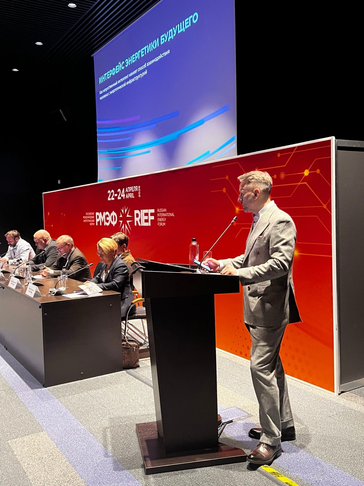

Портфолио-кейс: стратегия и аналитика рынка · Максим Поципух · Апрель 2026
Интерфейс энергетики будущего: доклад на РМЭФ-2026
![Максим Поципух]()
Аналитическая записка и доклад «Интерфейс энергетики будущего: как ИИ меняет способ взаимодействия человека с энергетической инфраструктурой». Российский международный энергетический форум, Санкт-Петербург, 23 апреля 2026 года. Автор — Максим Поципух, заместитель директора по развитию «Лаборатории Наносемантика». Новость о выступлении · материалы кейса в репозитории.
Предпосылки
Российский международный энергетический форум проходил 22–24 апреля 2026 года в «Экспофоруме». Меня пригласили докладчиком на конференцию «Взгляд в будущее: инновационные технологии и стартапы в энергетике» с темой о том, как искусственный интеллект меняет взаимодействие человека с энергетической инфраструктурой.
Задача была сложнее, чем кажется. В зале — энергетики, люди консервативной отрасли с многолетним опытом и столетней историей диспетчерского управления за спиной. Доклад о будущем легко провалить двумя способами: скатиться в футурологию без опоры на факты или обесценить системы, с которыми эти люди работают каждый день. Нужен был прогноз на 5–10 лет, который выдержит взгляд профессионала.
Моя роль. Я подготовил аналитическую записку, на которой строился доклад, и выступил с ним на конференции. Главный тезис выступления: чем больше рутины берёт на себя ИИ, тем важнее качество интерфейса между ним и человеком, который принимает критические решения. Это уже вопрос безопасности эксплуатации, а не удобства.

Доклад на конференции «Взгляд в будущее: инновационные технологии и стартапы в энергетике», РМЭФ-2026, Санкт-Петербург, 23 апреля 2026 года. Новость о выступлении.
1. Сто лет интерфейсов
Прогноз без истории не имеет веса, поэтому записка начинается с неё. Российская энергетика ведёт отсчёт оперативно-диспетчерского управления с 17 декабря 1921 года, когда в Московском районе ввели в действие первые документы о координации параллельной работы электростанций. За сто лет сменилось пять поколений интерфейса, и ни одно не заменяло человека — каждое расширяло его возможности.
Человек у установки: стрелочные приборы, бумажный журнал, доклад голосом или телеграфом
Телефон, частотомер и первый диспетчерский щит из фанеры с мнемосхемой: система видна целиком
Мозаичные щиты, ОАСУ «Энергия» (1971), первые АСУ ТП: архив и динамика вместо моментального снимка
Экранный интерфейс и SCADA, видеостены: картину можно перестроить под задачу за секунды
Предиктивная аналитика, цифровые двойники: система находит аномалии и подсказывает действия
С системой разговаривают голосом и показывают ей оборудование — слой поверх всех предыдущих
По материалам АО «СО ЕЭС» об истории диспетчерского управления; поколение 5 — прогноз доклада.
Такой взгляд снимает главное опасение зала: разговор о новом поколении — это продолжение отраслевой практики, а не приговор существующим системам. Отечественные SCADA — «КАСКАД», «КРУГ-2000», MasterSCADA, СКАДА-НИИПТ — и системы предиктивной аналитики вроде «ПРАНЫ» и «АтомМайнда» здесь фундамент, а не устаревшее наследие.
2. Проверка тезиса о «последней миле»
У сторонников ИИ-интерфейсов есть популярный ход: все современные системы упираются в «последнюю милю» — в неспособность человека с ними работать. Я не стал его повторять, а проверил. Применённый огульно, он неверен и оскорбителен для профессионалов: подготовленный диспетчер работает с многоэкранным интерфейсом так же уверенно, как пилот с приборной панелью.
Но там, где тезис подтверждается фактами, он верен. После аварии на АЭС Три-Майл-Айленд в 1979 году выяснилось, что лампа на щите показывала команду на закрытие клапана, а не его фактическое положение, а в первые минуты сработало больше сотни сигналов без всякого ранжирования. С тех пор интерфейс в атомной отрасли считается частью системы безопасности. Та же проблема живёт в промышленной автоматизации под названием «лавина сигналов»: по стандарту ISA-18.2 она начинается с 10 сигналов на оператора за 10 минут, тогда как целевой уровень в штатном режиме — около одного. Интерфейс сообщает, что произошло, но не помогает понять, почему.
Главное же — не недостатки SCADA, а новые задачи, под которые она никогда не проектировалась.
Опытных диспетчеров всё меньше, подготовка нового занимает годы. SCADA показывает процесс, но не учит.
На подстанции, на высоте, в шумном цеху нет экрана и свободных рук — только бумажный чек-лист и рация.
API связывают платформы технически, но соединить сигнал аналитики со складом запчастей и графиком ремонтов по-прежнему приходится человеку.
Отсюда корректная формулировка, на которой держится весь доклад: современные системы хорошо решают свои задачи, а пространство для нового поколения интерфейсов возникает не в замене, а в дополнении.
3. Человек как проектное задание
Если спросить, каким будет интерфейс через десять лет, полезно задать другой вопрос: каким интерфейсом человек пользуется сотни тысяч лет, общаясь с другим человеком? Не графиком и не формой ввода, а речью, интонацией, жестом, взглядом и контекстом.
Цифры здесь нужно брать осторожно. Популярная формула Меграбяна «7% слова, 38% интонация, 55% мимика» получена в двух экспериментах 1967 года на нескольких десятках студентов и, по словам самого автора, применима только к сообщениям о чувствах и установках. Даже если отбросить проценты, человеческое общение мультимодально по своей природе.
Сто лет человек учился говорить на языке машины: читать мнемосхемы, запоминать коды сигналов, переключаться между экранами. Языковые модели, распознавание и синтез речи, компьютерное зрение впервые позволяют машине говорить на языке человека. Мы не учим машину быть человеком — мы перестаём учить человека быть машиной.
Основной канал запроса: «Покажи состояние турбины № 4 за последние 6 часов».
Ответ звучит в гарнитуре во время обхода, когда руки заняты, а глаза смотрят на оборудование.
Камера смартфона или AR-очков узнаёт агрегат и накладывает историю и прогноз.
Система знает роль спрашивающего и место, откуда задан вопрос.
Не команды, а разговор: «А что там было в августе?» понимается в контексте прошлого вопроса.
4. Пятое поколение и четыре сценария
Пятое поколение — диалоговый мультимодальный интерфейс, который ложится слоем поверх SCADA, предиктивной аналитики и цифровых двойников, не заменяя их. Это не футурология: каждый сценарий опирается на то, что уже работает в промышленных пилотах.
Рынок к этому готов. По данным Минэнерго, доля компаний ТЭК, которые применяют ИИ, выросла вдвое за три года, а к 2027 году должна дойти до 70%.
Минэнерго России, по данным «Коммерсанта» (30.10.2025) и РИА Новости (22.04.2025).
Отдельно важна зрелость голоса. В 2024–2025 годах голосовые модели вышли на задержку около 200 миллисекунд — это уровень обычной паузы между репликами в разговоре. Mistral выпустил модель понимания речи Voxtral, OpenAI — голосовой gpt-realtime с подключением к телефонии. Технология вышла из стадии эксперимента.
| Сценарий | Что делает | Подтверждения | Зрелость |
|---|---|---|---|
| Диалоговая надстройка в диспетчерской | «Покажи объекты с аномалиями за сутки и отсортируй по приоритету» — поверх SCADA, аналитики и учёта | Siemens Industrial Copilot: больше 100 промышленных клиентов к октябрю 2024 года, голосовой режим в Simatic eaSie. Росатом: система поддержки оператора на блоке № 6 Нововоронежской АЭС в опытной эксплуатации с июля 2025 года — 360 систем, прогноз на 30 минут | пилоты |
| Ассистент полевого инженера | Узнаёт оборудование через камеру, ведёт по шагам, принимает голосовой отчёт | СИБУР в 2021 году сообщал об AR-консультантах на предприятиях клиентов. Boeing — до 25% экономии времени на сборке жгутов с AR, по данным поставщика решения | пилоты |
| Цифровой наставник | Обучение и аттестация нового персонала на оборудовании конкретной станции | «Газпром нефть шельф» — VR-тренажёр для обучения (2023); BIOCAD — AR-приложение для обучения работе с лиофильной сушилкой | пилоты |
| Контакт-центр энергосбыта | Голосовой ассистент принимает показания, консультирует по тарифам и платежам | Голосовые роботы в контакт-центрах уже работают — это самый зрелый сценарий и опора для остальных | работает |
На горизонте 7–10 лет следующая ступень — системы из нескольких ИИ-агентов, которые взаимодействуют между собой: агент предиктивной аналитики сообщает агенту планирования ремонтов, тот готовит заявку на запчасти и предлагает диспетчеру план работ. По прогнозу Deloitte, в 2025 году агентов пилотирует четверть компаний, использующих генеративный ИИ, а к 2027 году — половина.
5. Барьеры
Без разговора о сложностях доклад был бы красивой картинкой. Часть барьеров не решается технически — только нормативно, организационно и инвестиционно. Поэтому каждый барьер в записке заканчивается практическим выводом, а не констатацией проблемы.
| Барьер | В чём сложность | Вывод |
|---|---|---|
| Кибербезопасность КИИ | 187-ФЗ, приказы ФСТЭК № 31 и № 239, постановление № 127. В 2025 году — больше 400 дел о нарушении категорирования. Голос можно подделать, команду — внедрить через запрос | Контур «информирование и рекомендации», а не «управление»; подтверждение оператором, журнал каждого запроса, сегментация сетей, однонаправленные шлюзы |
| Галлюцинации моделей | В апреле 2025 года OpenAI сообщила, что o3 ошибается в 33% вопросов теста PersonQA — вдвое чаще o1. Полностью устранить галлюцинации нельзя | Модель — интерпретатор доверенных данных (RAG), а не источник истины; ссылка на источник в каждом ответе |
| Отраслевые данные | Общие модели плохо знают терминологию, маркировки и аббревиатуры энергетики | Дообучение на данных заказчика, терминологические базы, проверка распознавания речи в шуме |
| Технологический суверенитет | Siemens и ABB ушли, Schneider Electric продала бизнес, GE свернула деятельность; на значимых объектах КИИ иностранное ПО запрещено с 2025 года | Развёртывание в контуре заказчика — норма, а не опция |
| Кадры и культура | Для части персонала ИИ-ассистент непривычен; молодые сотрудники ждут голосовых помощников, как дома | Проект управления изменениями: пилотные группы с опытными диспетчерами, прозрачность, от информирования к рекомендациям |
| Регулирование | Отраслевых стандартов нет; приказ ФСТЭК № 117 с 1 марта 2026 года впервые задал требования к ИИ, но для государственных систем; законопроект о сертификации ИИ высокого риска — в работе | Опережающее внедрение: первые получают опыт и влияют на стандарты |
| Экономика | Эффект комплексный: время операций, ошибки, скорость обучения. Методик оценки нет | Обоснование через стратегическую готовность отрасли, а не ROI одного проекта |
Главный из выводов: в энергетике ИИ-интерфейс должен работать в контуре «информирование и рекомендации», а не «прямое управление». Любое действие, влияющее на технологический процесс, подтверждает оператор.
6. Почему у России есть фундамент
Доклад заканчивался на сильной ноте, но без пустого пафоса — с пятью основаниями:
- Столетие диспетчерской школы. Централизованное оперативно-диспетчерское управление в стране ведёт отсчёт с 1921 года, и интерфейсы следующего поколения вырастают из этой практики.
- Свой технологический стек. Есть отечественные решения во всех слоях ИИ-интерфейса: диалоговые платформы, в том числе DialogOS «Наносемантики», речевые технологии NLab Speech в реестре российского ПО, нейросетевые библиотеки, работающие на «Эльбрусе», собственные SCADA и системы предиктивной аналитики.
- Окно в регулировании. Европейский AI Act уже относит ИИ в энергоснабжении к системам высокого риска, но требования начнут применяться только в ближайшие годы. Отраслевых стандартов для генеративного ИИ на значимых объектах КИИ в России пока нет — правила формируются сейчас, и в этом можно участвовать.
- Спрос и государственная стратегия. Национальная стратегия развития ИИ ставит цель — 11,2 трлн рублей прироста ВВП к 2030 году, а уход западных вендоров создал спрос на отечественные решения.
- Человек в центре. Российская диспетчерская школа построена на уважении к компетенции человека, который принимает последнее решение. Поэтому разговор об интерфейсе будущего — не о замене человека, а о возвращении ему естественного языка.
7. Как построен доклад
Записка — основа, а доклад — 20 минут для зала, который не обязан соглашаться. Порядок блоков выстроен так, чтобы доверие появлялось раньше, чем прогноз: сначала история, которую зал знает и уважает, потом честная проверка популярного тезиса и только затем образ будущего.
- 0–2 минВступлениеДиспетчер 1921 года с телефоном и диспетчер 2026 года с видеостеной. Что будет через 10 лет?
- 2–6 минИсторияПять поколений: каждое расширяло возможности человека, а не заменяло его
- 6–9 мин«Последняя миля» — честноНе «SCADA устарела», а «появились новые задачи»
- 9–12 минПрирода человекаИнтерфейс будущего не изобретается, а возвращается к естественной форме
- 12–16 минОбраз будущегоПятое поколение и четыре сценария с подтверждениями сегодняшнего дня
- 16–19 минБарьерыКаждый — с практическим выводом
- 19–20 минФиналПочему у России есть основания и возврат к образу диспетчера
Финал возвращает к началу. Сто лет назад диспетчер слушал телефон и отмечал изменения на мнемосхеме. Через десять лет он снова будет слушать и говорить — только собеседник будет другим.
8. Результат
Доклад прозвучал на РМЭФ-2026 23 апреля в рамках конференции «Взгляд в будущее: инновационные технологии и стартапы в энергетике». Новость о выступлении опубликована на сайте «Наносемантики».
Другие кейсы автора
Источники
- АО «СО ЕЭС»: история оперативно-диспетчерского управления
- АО «СО ЕЭС»: как менялись диспетчерские щиты
- НИИПТ: АСУ ТП Выборгской преобразовательной подстанции
- «Коммерсантъ»: ИИ в энергетике, данные Минэнерго
- РИА Новости: Минэнерго о применении ИИ в ТЭК
- Отчёт комиссии Кемени об аварии на Три-Майл-Айленд
- Alarm floods and plant incidents (ISA-18.2)
- Microsoft и Siemens: Industrial Copilot
- Siemens: ИИ-агенты и голосовой режим
- «Российская газета»: цифровой помощник оператора на Нововоронежской АЭС
- Kyutai Moshi: задержка голосовой модели
- Mistral: Voxtral
- OpenAI: gpt-realtime
- Deloitte TMT Predictions 2025: ИИ-агенты
- TechCrunch: галлюцинации o3 и o4-mini
- Xu и др. (2024): неизбежность галлюцинаций
- Меграбян о границах своей формулы
- ФСТЭК о проверках КИИ в 2025–2026 годах
- Приказ ФСТЭК № 117: требования к ИИ
- Указ № 166 об отечественном ПО на значимых объектах КИИ
- Европейский AI Act: ИИ в энергетике — высокий риск
- «Коммерсантъ»: цель Национальной стратегии развития ИИ — 11,2 трлн рублей
- СИБУР: AR-консультанты (CNews, 2020)
- Boeing и Upskill: AR в сборке жгутов
- «Наносемантика» на РМЭФ-2026
Аналитическая записка к докладу не публикуется целиком; факты из неё сверены с источниками выше, цифры приведены по первоисточникам.